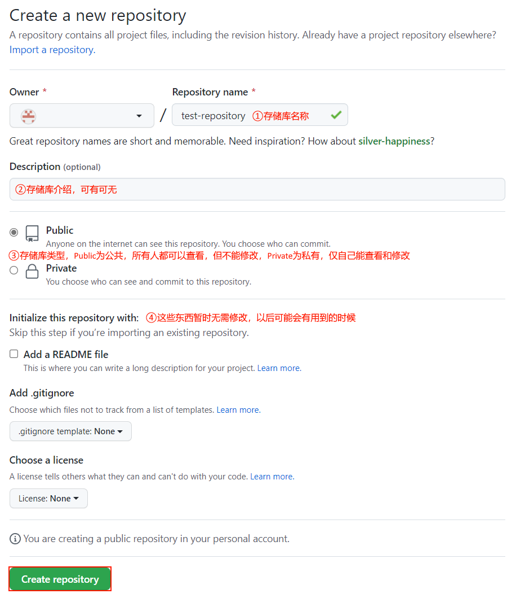

Github使用教程
作者：还给我六个币
最后更新时间：2022/11/06 14:53:49
本篇简述
本篇文章可以帮助您使用Git和Github的基础功能：注册账号，创建存储库，上传文件至存储库。
Github是什么
Github是世界上最大的代码托管平台，能够免费托管任何大小不超过100MB的文件，还可以使用Github Pages创建自己的网站。
学会使用Github是每个码农必备的技能。
注册Github
1. 访问github.com，点击“Sign up”按钮。
2. 根据网页内提示填写内容。
3. 向邮箱发送验证码。
4. 注册成功。
存储库的基本使用
1. 访问github.com/new，填写存储库的信息。
2. 点击"Create repostory"按钮。
3. 点击“uploading an existing file”上传文件。